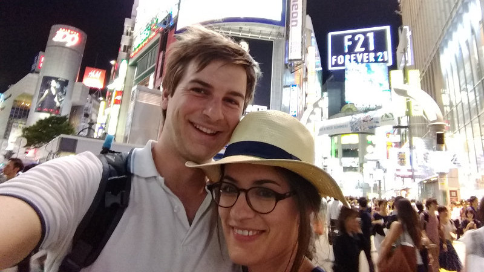
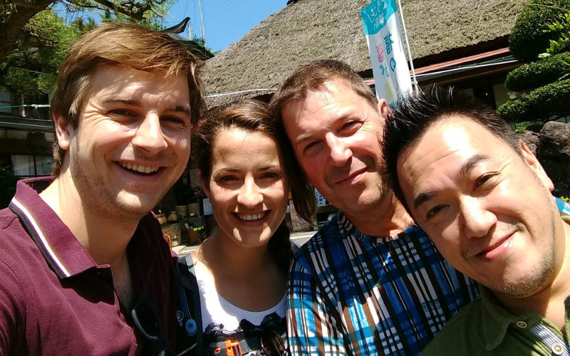
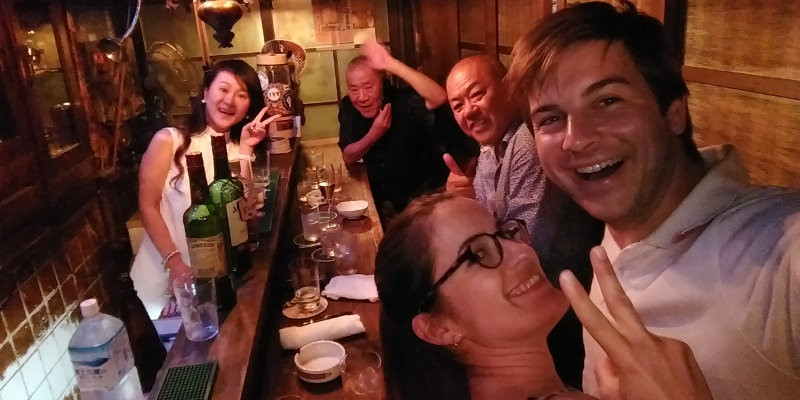

C’est parti pour 2 semaines magiques : avion, taxi, randonnée et surtout Shinkansen (le tgv japonais) qui se conjugue toujours avec Bento (le jambon-beurre japonais).

Tokyo
Première étape dans l’intense et éblouissante Tokyo.

Koriyama
Retrouvailles avec Rémi et Takashi chez ce dernier, à Koriyama.
Kyoto
Tiens, un temple ! À Kyoto ? Quelle surprise :-)
Koyasan
3 jours de retraite bouddhiste dans un monastère du mont Koya. Zen oblige, pas de téléphone et donc pas de photo.

Osaka
Soirée champagne imprévue dans un mini-bar à Whiskey du centre d’Osaka.
Kamikochi
Randonnée le long d’une coulée de lave à Kamikochi.
Merci
C’était superbe, exceptionnel, magique, romantique. Pour ce magnifique voyage que vous nous avez offert… Merci !